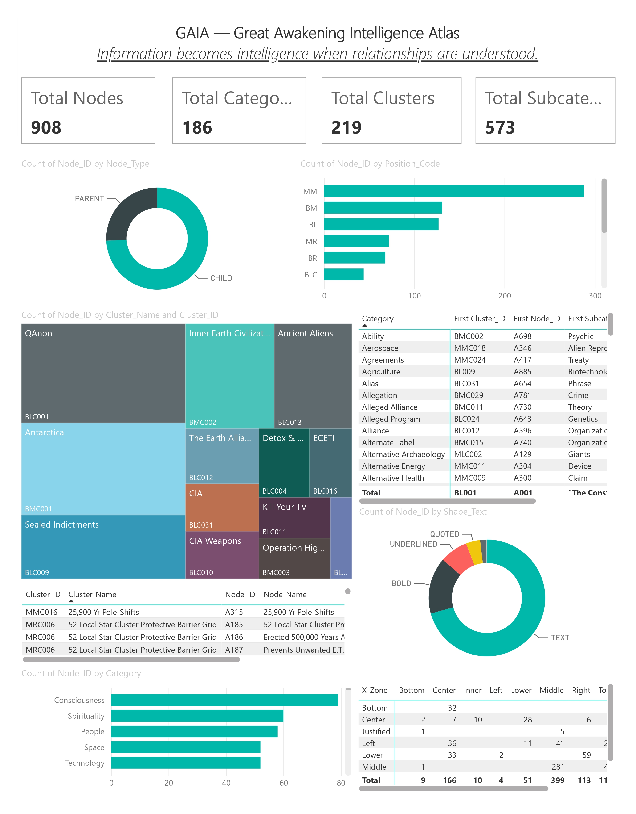
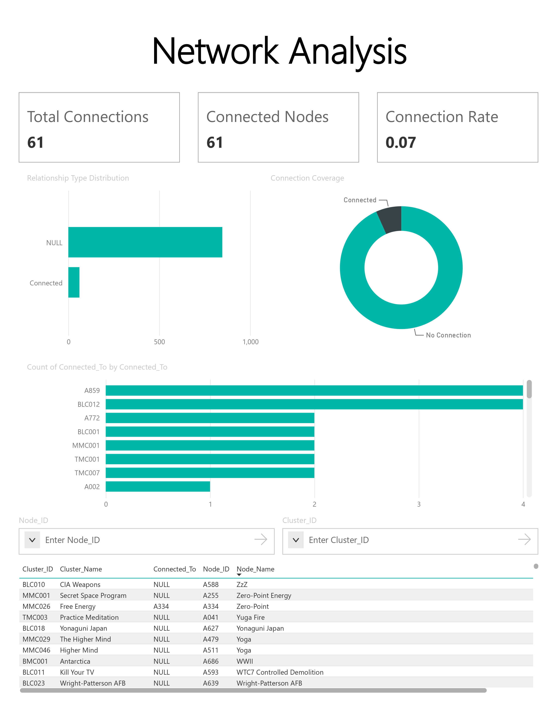

Decoding the Great Awakening Map through data visualization, network analysis, knowledge graphs, and pattern recognition.
The Great Awakening Intelligence Atlas transforms the original map into structured information, making relationships easier to explore through visualization, analytics, and network analysis.
Interested in exploring the complete project? Access the available resources below or request the original project files.
GAIA was developed to organize and analyse the Great Awakening Map by transforming its complex visual information into structured data. The project combines data extraction, classification, dashboard creation, and network analysis to reveal hidden patterns and meaningful relationships between concepts.


Interested in discussing the project, collaborating, or learning more about the methodology? Feel free to reach out.
Contact Me